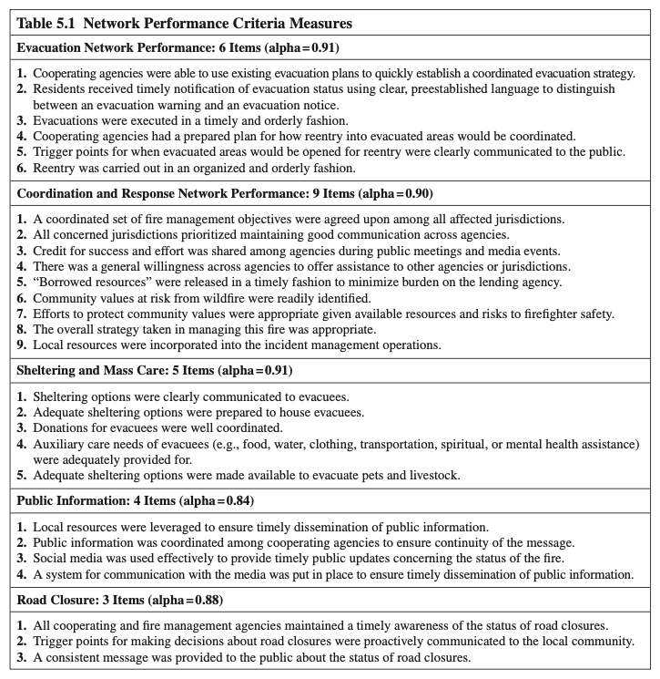
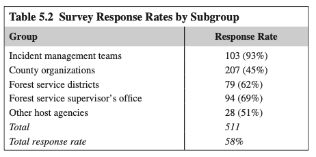
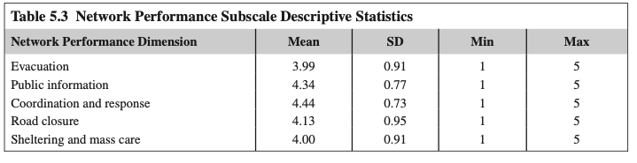
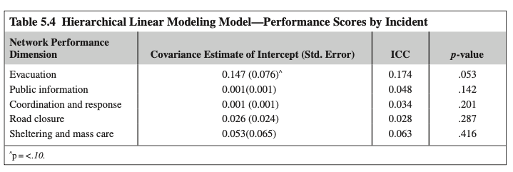
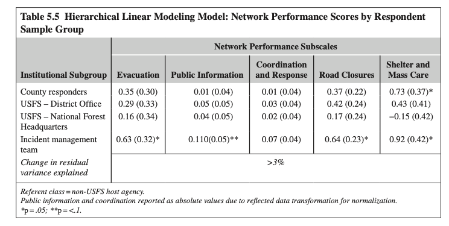

1. 서론: 재난 대응 네트워크와 성과 분석의 4단계 층위
재난 사건 대응은 어떤 단일 조직이나 기관도 단독으로 감당할 수 없는 자원적·기능적 범위를 지닙니다. 따라서 재난 대응 단계에서 활동하는 수많은 조직들을 사건대응 네트워크(incident response network)로 개념화하고, 개별 기관의 성과를 넘어 네트워크 전체의 성과를 이해하는 것이 필수적입니다 (Nowell & Steelman, 2013; Steelman et al., 2014).
네트워크 내부의 복잡한 상호의존성으로 인해 어느 한 수준에서의 높은 성과가 반드시 상위 수준의 성과로 이어지지 않으며, 오히려 다른 수준의 성과를 저해하는 결과를 낳을 수 있습니다. 또한 네트워크 성과 평가 과학은 여전히 초기 단계(infancy)에 머물러 있습니다 (Kenis & Provan, 2009; O'Toole, 2015).
2. 네트워크 성과 평가: 선행문헌이 제시하는 5대 원칙
Turrini et al.(2010)과 Kenis & Provan(2009)은 네트워크 효과성을 "네트워크 전체에 의해 생산되어 개별 참여 조직을 넘어 귀속되는 효과, 결과, 영향 및 편익"으로 정의합니다. 본 장에서는 선행문헌의 핵심 권고사항을 5대 원칙으로 정립했습니다.
flowchart LR
P1["원칙 1
상호의존적 기능
(단독 달성 불가)"] --> P2["원칙 2
전체론적 다차원
(과정+결과 통합)"]
P2 --> P3["원칙 3
행위자 수준과
전체 수준 병행"]
P3 --> P4["원칙 4
외생적 맥락 조건
적합성 보정"]
P4 --> P5["원칙 5
전체 구성원의 지각
(다중 관점 수용)"]
| 원칙 | 선행문헌 핵심 원칙 | 재난 네트워크 실증 적용 기준 |
|---|---|---|
| 원칙 1 | 단일 조직이 단독으로 달성할 수 없는 기능적 결과(Functional Outcomes) 반영 (Provan & Milward, 1995) | 명령-통제 내 '조직 기능성'과 분리된, 타 기관과의 협력을 통해서만 가능한 '상호의존적 네트워크 기능성'만 추출 |
| 원칙 2 | 단일 지표가 아닌 전체론적(Holistic) 다차원 척도 구성 (Mandell & Keast, 2008) | 신뢰·호혜성 등 '협력적 과정'과 실질적 '집합적 결과'를 포괄하는 다면적 설문 문항 개발 |
| 원칙 3 | 행위자 수준 기여 성과와 네트워크 수준 목표 달성 성과의 병행 측정 | 개별 대원의 조정 효과성(명부 조사) 및 IMT의 로컬 민감성과 전체 네트워크 5대 기능 성과 동시 측정 |
| 원칙 4 | 네트워크가 작동하는 외생적 조건(Exogenous Conditions)에 맞춘 보정 | 거버넌스 구조, 의무성/자발성, 발전 단계의 동질성 확보 (21개 산불 사건 모두 ICS 및 대응기 통제) |
| 원칙 5 | 단일 정보제공자가 아닌 전체 네트워크 구성원의 지각(다중 관점) 반영 | 지휘관 단독 인터뷰를 배제하고, 현장 대응에 참여한 모든 핵심 행위자(전수 명부) 대상 다수 정보제공자 조사 |
3. 산불 재난 시 네트워크 성과 측정 및 척도 개발
산림-도시 접경(WUI; Wildland-Urban Interface) 대형 산불은 현장지휘체계(ICS)의 지휘관과 현장관리팀(IMT)이 화재 진압을 관제하지만, 주민 대피, 도로 통제, 대피소 운영, 공보 활동 등은 지자체·경찰·구호기관과의 수평적 조정(Lateral Coordination)이 필수적입니다 (Moynihan, 2009).
연구진은 미국 서부 7개 산불 현장 관찰과 24명의 베테랑 전문가 심층 인터뷰(누적 646년 경력, 824건 대형 산불 대응 경험)를 거쳐 30개 문항을 도출하고, 2013년 여름 4개 주 21개 산불 대응자 대상 **탐색적 요인분석(EFA)**을 실시하여 5개 하위척도를 확립했습니다.

| 하위척도 차원 | 신뢰도 ($\alpha$) | 핵심 평가 문항 내용 요약 (5점 리커트) |
|---|---|---|
| 1. 피난 관리 성과 (Evacuation) |
6문항 $\alpha = 0.91$ |
기존 대피 계획 기반 신속 수립 / 대피 경고 vs 공고의 명확한 용어 사용 / 질서 있는 집행 / 재진입(Reentry) 사전 계획 수립 / 재진입 개시 발화점(Trigger Points) 소통 / 질서 있는 재진입 |
| 2. 조정 및 대응 성과 (Coordination & Response) |
9문항 $\alpha = 0.90$ |
화재 관리 목표 합의 / 기관 간 양호한 소통 우선순위 / 공개 행사에서 성공과 공로(Credit) 공유 / 상호 지원 의지 / 차용 자원(Borrowed Resources) 적시 반환 / 지역사회 위험 가치 식별 / 가치 보호 노력의 적절성 / 전반적 관리 전략 적절성 / 로컬 자원의 통합 |
| 3. 대피소 및 대규모 구호 (Sheltering & Mass Care) |
5문항 $\alpha = 0.91$ |
대피소 옵션 명확한 전달 / 적절한 시설 준비 / 구호 기부물품 조정 / 부수적 돌봄(음식, 식수, 의복, 정신건강) 지원 / 반려동물 및 가축(Pets & Livestock) 대피 옵션 제공 |
| 4. 공공정보 관리 (Public Information) |
4문항 $\alpha = 0.84$ |
적시 보급을 위한 지역 자원 활용 / 일관성 보장을 위한 기관 간 공보 조정 / 화재 현황 소통을 위한 소셜 미디어 효과적 활용 / 언론 소통 시스템 구축 |
| 5. 도로 통제 조정 (Road Closure) |
3문항 $\alpha = 0.88$ |
통제 현황에 대한 적시 인식 유지 / 통제 결정 기준이 되는 발화점 선제적 소통 / 대중 대상 일관된 메시지 제공 |
1. 화재 진압 중심 탈피와 생애주기 전주기 포착: 불을 껐는지가 아니라, 주민 피난의 '재진입 단계'와 농촌 지역의 특성을 반영한 '반려동물/가축 대피'까지 포괄하는 다기관 협업 생애주기를 완벽히 구조화했습니다.
2. 비공식 규범과 사회적 자본의 지표화: 조정 척도 3번(**"공로 공유"**)과 5번(**"차용 자원의 적시 반환"**)은 네트워크의 지속성을 결정짓는 핵심 규범을 실증 척도로 끌어올렸습니다.
3. 우수한 내적 일관성($\alpha \ge 0.84$): 모든 척도가 0.84~0.91의 높은 신뢰도를 보여, 복잡한 재난 현장에서도 5개 기능 차원이 안정적으로 측정됨을 입증합니다.
4. 성과평가 내 다원주의(Pluralism)와 실재론적 객관주의 비판
전통적 성과 평가는 객관적이고 정확하며 통제 가능한 지표를 우선시하는 **실재론(Realist perspective)**에 기반합니다. 즉, 모든 행위자가 동등하게 평가할 수 있는 '단일한 객관적 실재'가 존재한다고 가정합니다 (Neely et al., 1997).
미국 산불 정책에서 성과를 단순히 **'불탄 면적(acres burned)의 최소화'**로 측정하자, 생태학적으로 주기적 연소가 필요한 산림에 가연성 목질 연료(woody fuels)가 비정상적으로 축적되어(Mutch, 1970) 훗날 감당할 수 없는 초대형 참사를 부르는 비극을 초래했습니다 (Williams, 2013). 복잡한 재난 영역에는 단일한 객관적 지표가 존재할 수 없으며, 필연적으로 **"무엇을 가치 있게 여길 것인가"에 대한 규범적 가치 판단(Normative judgments)**이 개입됩니다 (Simon, 1976).
따라서 네트워크 성과를 연구할 때는 단일 평가를 강요할 것이 아니라, 네트워크 내부의 다양한 행위자 집단이 지닌 다양한 관점, 즉 **'다원주의(Pluralism)'**를 체계적으로 수용해야 합니다 (Mandell & Keast, 2008). 연구진은 다음 2대 질문을 설정했습니다:
- RQ1: 성과 평가의 변량은 **네트워크 간(Between-networks)** 대 **네트워크 내(Within-networks)**에서 각각 얼마나 발생하는가?
- RQ2: 네트워크 내 변량은 **제도적 소속(Institutional affiliations; 하위집단)**과 어느 정도 연관되어 있는가?
5. 연구방법 및 위계선형모형(HLM) 설계
2013년 여름 아이다호, 몬태나, 오레곤, 워싱턴 4개 주에서 발생한 WUI 대형 산불 21개 사건을 대상으로 369개 기관 885명에게 설문을 배포하여 551명(58%)의 유효 응답을 확보했습니다.

| 하위집단 분류 (Subgroup) | 응답자 수 (N) | 응답률 (Response Rate) | 조직적 특성 및 역할 |
|---|---|---|---|
| 현장관리팀 (Incident Management Teams; IMT) | 103명 | 93% | 파견된 연방/광역 화재 작전 지휘 관제 조직 |
| 카운티 대응 기관 (County organizations) | 207명 | 45% | 보안관(Sheriff), 카운티 응급관리국, 의용소방대 등 지역 행위자 |
| 미 산림청 지구 사무소 (USFS Districts) | 79명 | 62% | 국유림 현장 일선 관리 지구 |
| 미 산림청 감독관 사무소 (USFS Supervisor's Office) | 94명 | 69% | 국유림 관리 본부 행정 부서 |
| 기타 토지 관리 기관 (Other host agencies) | 28명 | 51% | 토지관리국(BLM), 주 산림청 등 |
IMT는 학술 연구의 취지를 명확히 인지하여 93%라는 압도적 응답률을 보인 반면, 카운티 로컬 기관은 재난 수습과 민원 부담으로 인해 45%에 그쳤습니다. 이처럼 집단 간 표본 크기가 불균등하고 개인이 사건 및 조직 내부에 중첩된(Nested) 데이터 구조에서는 일반 OLS 회귀분석을 사용할 경우 표준오차가 과소추정되므로, **위계선형모형(HLM / Multilevel Modeling)**의 적용이 필수적입니다 (Hox, 2010).
6. 실증 분석 결과: 사건 간 변량과 사건 내 변량의 충격적 발견
1. 사건 간 네트워크 성과 변량 (Null Model & ICC 분석)

| 성과 하위척도 차원 | 평균 (Mean) | 표준편차 (SD) | 최소 - 최대 | 분포 특성 |
|---|---|---|---|---|
| 피난 관리 (Evacuation) | 3.99 | 0.91 | 1.00 - 5.00 | 전반적 긍정 평가 |
| 공공정보 (Public Information) | 4.34 | 0.77 | 1.00 - 5.00 | 높은 긍정 평가 |
| 조정 및 대응 (Coordination & Response) | 4.44 | 0.73 | 1.00 - 5.00 | 전 차원 중 최고점 |
| 도로 통제 (Road Closure) | 4.13 | 0.95 | 1.00 - 5.00 | 상대적 편차 큼 |
| 대피소 및 구호 (Sheltering & Mass Care) | 4.00 | 0.91 | 1.00 - 5.00 | 복지 부담 관련 편차 존재 |

| 성과 하위척도 차원 | 절편 공분산 추정치 (Std. Error) | 급내상관 (ICC) | p-value | 사건 간 구별 가능성 판정 |
|---|---|---|---|---|
| 피난 관리 | 0.147 (0.076) | 0.174 (17.4%) | .053^ | 한계적 유의 (구별 가능성 근접) |
| 공공정보 | 0.001 (0.001) | 0.048 (4.8%) | .142 | 사건 간 차이 없음 (통계적 구별 불가) |
| 조정 및 대응 | 0.001 (0.001) | 0.034 (3.4%) | .201 | 사건 간 차이 없음 (통계적 구별 불가) |
| 도로 통제 | 0.026 (0.024) | 0.028 (2.8%) | .287 | 사건 간 차이 없음 (통계적 구별 불가) |
| 대피소 및 구호 | 0.053 (0.065) | 0.063 (6.3%) | .416 | 사건 간 차이 없음 (통계적 구별 불가) |
pie title Table 5.4 공공정보 성과 변량의 귀속 분포 (ICC = 4.8%)
"사건 간 차이 (Between Incidents)" : 4.8
"사건 내 개인 간 차이 (Within Incidents / Individuals)" : 95.2
1. 급내상관(ICC)의 의미: ICC는 전체 성과 평가의 차이 중 "사건(네트워크) 자체의 우열"에 의해 설명되는 비율을 뜻합니다.
2. 변량의 83%~97%가 개인 간 차이!: 전통적 상식은 "A 산불은 고성과 네트워크였고, B 산불은 실패한 네트워크였다"라고 나눌 수 있다고 믿었습니다. 그러나 HLM 결과, **공공정보는 95.2%, 조정은 96.6%, 도로통제는 97.2%의 변량이 같은 산불 안에서 대응자들끼리 서로 다르게 평가한 것**이었습니다! 피난 관리(17.4%, p=.053)를 제외한 모든 영역에서 21개 산불 네트워크는 통계적으로 서로 구분되지 않았습니다(Statistically indistinguishable).
2. 사건 내 네트워크 성과 변량: 제도적 소속(하위집단)의 영향
연구진은 *"그렇다면 왜 같은 산불 안에서 개인 간 시각차가 이렇게 큰가? 소속 기관(IMT vs 로컬 카운티 vs 산림청) 때문인가?"*를 확인하기 위해 하위집단 소속을 1수준 고정효과로 투입했습니다.

| 성과 하위척도 | 카운티 대응자 | USFS 지구사무소 | USFS 본부 | 현장관리팀 (IMT) | 잔차 설명변량 변화 ($\Delta R^2$) |
|---|---|---|---|---|---|
| 피난 관리 | 0.35 (0.30) | 0.29 (0.33) | 0.16 (0.34) | 0.63 (0.32)* | < 3% |
| 공공정보 | 0.01 (0.04) | 0.05 (0.05) | 0.04 (0.05) | 0.11 (0.05)** | < 3% |
| 조정 및 대응 | 0.01 (0.04) | 0.03 (0.04) | 0.02 (0.04) | 0.07 (0.04) | < 3% |
| 도로 통제 | 0.37 (0.22) | 0.42 (0.24) | 0.17 (0.24) | 0.64 (0.23)* | < 3% |
| 대피소 및 구호 | -0.73 (0.37)* | -0.43 (0.41) | -0.15 (0.42) | 0.92 (0.42)* | > 3% |
1. 설명변량 증가의 미미함 ($\Delta R^2 < 3\%$): 소속 기관을 모형에 넣었음에도 개인 간 평가 차이를 설명하는 비율은 3% 미만이었습니다. 즉 시각차는 단순한 "공식 명찰"을 넘어선 개인적 인지 요인에 기인합니다.
2. IMT(현장관리팀)의 일관된 고평가: IMT는 피난($+0.63^*$), 공보($+0.11^{**}$), 통제($+0.64^*$), 구호($+0.92^*$) 전 영역에서 타 집단보다 **유의하게 더 긍정적인 평가**를 내렸습니다.
3. 카운티 로컬 기관의 구호 영역 불만족 ($-0.73^*$): 카운티 로컬 대응자들은 유독 대피소 및 구호에서 통계적으로 유의한 부정적 평가($-0.73^*$)를 보였습니다. 이는 이재민 대피소 관리와 주민 돌봄의 현실적 부담이 로컬 지자체에 집중되어 갈등이 발생했음을 실증합니다.
7. 논의 및 8. 인지 이론(Cognitive Theory) 기반 3대 프로세스
전통적 평가는 평가자 간 불일치를 '측정 오차(Measurement error)'로 간주했습니다. 그러나 복잡계 재난 현장에서 다원주의는 오차가 아니라 **'네트워크의 고유한 실재(Endemic reality)'**입니다 (Koliba, 2014; Mandell & Keast, 2008).
연구진은 인지 이론을 바탕으로 **왜 IMT는 일관되게 네트워크 성과를 고평가했는지**를 3단계 인지 메커니즘으로 명쾌하게 규명했습니다.
flowchart TD
subgraph Cog ["인지 이론 기반 3대 주관성 형성 프로세스"]
S["1. 지각 / 감지 (Sensing)
- 네트워크 중심 지휘 위치
- 접하는 정보의 원천과 시야 차이"]
M["2. 의미구성 (Sensemaking)
- 과거 대형 산불 경험 필터
- 동일 자극에 대한 상이한 해석"]
E["3. 평가 (Assessing/Evaluating)
- 내적 기준 잣대(Scale) 격차
- 조직 편향 및 일일 토론 집단 극화"]
end
S --> M --> E
9. 연구의 한계 및 2대 대안적 성과평가 모델
1. 연구질문 (Research Questions)
Chapter 5의 HLM 결과(성과 평가 변량의 83%~97%가 사건 간이 아닌 개인 간 차이)와 다원주의 시각을 바탕으로 소방 안전 네트워크의 5대 연구 질문을 설정합니다.
2. 확인한 연구결과 (Literature & Empirical Findings from Ch.4 & Ch.5)
| 이론 및 챕터 출처 | 선행연구 핵심 실증 결과 | 본 소방 안전 네트워크 연구로의 연계 적용 |
|---|---|---|
| 다원주의 & HLM 실증 (Chapter 5; Nowell et al., 2017) |
성과 평가 변량의 **83%~97%가 사건 간이 아닌 개인 간(Within-incident)에 존재** (Table 5.4). 중앙지휘팀(IMT) 나홀로 고평가 편향 (Table 5.5). | 단일 리커트 평균점수 비교의 환상을 타파하고, 계급 간(지휘부 vs 일선) 시각차와 정보 격차를 네트워크 구조(중심성, 매개성)로 규명. |
| 인지 3대 프로세스 (Chapter 5; Weick; Moscovici) |
지각(Sensing; 정보접근성 차이), 의미구성(Sensemaking; 경험 필터), 평가(Evaluating; 집단 극화 및 자기이해 편향). | 지휘관리층의 상황판 지각 vs 일선 대원의 농연 속 무전 난청 감지 격차를 분석하고, 중간관리자(구조주임)의 소통 매개 역할 실증. |
| 소실면적 단일지표 비판 (Chapter 5; Williams, 2013) |
소실면적 최소화라는 단일 결과지표가 목질 연료를 과다 축적시켜 초대형 참사를 유발함. | 사상자 수/재해율 같은 후행지표(Lagging) 중심의 결과 문책 탈피 $\to$ Table 5.1과 같은 **과정적·협업적 선행 안전지표(Leading Metrics)** 수립. |
| 합의수준(SD) 대안모델 (Chapter 5; Mandell & Keast) |
평균 점수 대신 **표준편차(SD)**를 성과 지표로 채택하여 '공유된 참조틀' 형성 여부 측정. | 지휘관과 일선 대원 간 안전인식의 표준편차(SD)를 산출하여, 편차가 적은 관서를 고성과 안전 관서로 진단하는 KPI 도입. |
| 5대 관계 범주 & IOSP (Chapter 4; Kapucu; Varda) |
인적, 지식, 자원, 과업, 조직의 5대 관계 분리 및 In/Out/Seeker/Provider 매핑. | 4대 관계 매트릭스(소통, 조언, 장비, 신뢰) 구축 및 현장 진입 대원(In/Seeker), 지휘관/안전점검관(In/Provider) 매핑. |
| 사회적 취약성 & 결측치 (Chapter 4; Valente et al., 2008) |
네트워크 내 고립 노드(Isolates)의 복구 지체. 무작위 결측치 20% 초과 시 중심성 왜곡. | 안전 소통이 단절된 **'네트워크 고립 대원(Isolated Firefighter)'**의 조기 스크리닝 및 조사 결측률 10% 이하 엄격 통제. |
3. 연구절차 (Research Procedure: 6단계 표준 프로세스)
flowchart LR
S1["[STEP 1]
연구 0점 & 경계 설정
(의령 119구조대 전수)"] --> S2["[STEP 2]
설문 도구 설계
(사전 명부 Roster)"]
S2 --> S3["[STEP 3]
전수 데이터 수집
(모바일/서면 병행)"]
S3 --> S4["[STEP 4]
데이터 정제 & 코딩
(1-mode 매트릭스)"]
S4 --> S5["[STEP 5]
넷마이너(NetMiner)
4단계 정밀 분석"]
S5 --> S6["[STEP 6]
결과 해석 & 정책제언
(고립대원 선행 KPI)"]
4. 네트워크 분석단위 및 분석지표 (Units & Network Metrics)
• In-Degree Centrality (인입 연결정도): 동료들로부터 안전 조언/도움을 요청받는 빈도 $\to$ 신뢰받는 안전 리더 지수.
• Out-Degree Centrality (인출 연결정도): 위험 직면 시 타인에게 자원을 요청하는 빈도.
• Betweenness Centrality (매개 중심성): 지휘부와 현장 대원 사이에서 정보를 매개하는 소통 교량(Bridge) 또는 병목(Bottleneck) 식별.
• Eigenvector Centrality (고유벡터): 영향력 있는 핵심 지휘관/선임 대원과의 연결 영향력.
• E-I Index (External-Internal Index): 집단 내부 연계 vs 외부 연계 비율 산출 ($-1$에 가까울수록 계급 간 소통이 단절된 폐쇄적 파벌, $+1$에 가까울수록 개방적 협력망).
• 파벌(Cliques) 및 K-core 분석: 비공식적 안전 소통 결속 하위집단 분리.
• Network Density (네트워크 밀도): 전체 가능한 안전 연계 중 실제 형성된 비율.
• Network Centralization (집중도): 특정 지휘관 1~2인에게 안전 소통이 독점된 정도.
• Reciprocity (호혜성): 안전 소통과 지원의 상호 호혜적 교환 비율.
5. 네트워크 데이터 구조 및 코딩처리 방식 (Data & Coding Method)
| 구분 | 데이터 형식 | 변수 구성 및 코딩 기준 |
|---|---|---|
| 노드 속성 데이터 (Node Properties) |
1-mode 엑셀 테이블 (행 = 소방관 $i$) |
• ID: 고유 식별코드 (FF01 ~ FF50) • Rank (계급): 1=지휘관리층(령·경), 2=중간관리층(위·장), 3=일선대원층(교·사) • Team (근무팀): 1팀, 2팀, 3팀 • Role (직무): 1=구조, 2=진압, 3=구급, 4=운전 • Tenure (경력): 소방 근무 연수(연 단위 연속형 변수) |
| 관계 매트릭스 1 (현장 소통망) |
$N \times N$ 정방 행렬 ($M_{\text{comm}}$) |
"현장 출동 시 안전 정보 및 작전 상황을 얼마나 자주 소통하는가?" 1점(전혀안함) ~ 5점(매우자주). 4점 이상을 연계 존재(1)로 이진화(Binarization) 병행. |
| 관계 매트릭스 2 (전술 조언망) |
$N \times N$ 정방 행렬 ($M_{\text{advice}}$) |
"비정형 고위험(산악·수난) 현장에서 위험 판단 및 구조 전술에 대해 누구에게 조언을 구하는가?" 1~5점 가중치 및 대각선(자신 $i=j$) 0 처리. |
| 관계 매트릭스 3 (장비 차용망) |
$N \times N$ 정방 행렬 ($M_{\text{resource}}$) |
"긴급 상황 발생 시 특수 장비, 유압장비, 로프 등을 상호 융통하고 지원받는 관계는 누구인가?" |
| 관계 매트릭스 4 (신뢰/아차사고망) |
$N \times N$ 정방 행렬 ($M_{\text{trust}}$) |
"현장에서 겪은 아차사고(Near-Miss)나 실수를 문책 걱정 없이 솔직하게 털어놓고 의논할 수 있는 동료는 누구인가?" |
1. **대각선 요소 처리**: 자기 자신과의 관계($i = j$)는 모두 `0`으로 처리합니다.
2. **결측치(Missing Data) 관리**: Valente et al.(2008)의 경고에 따라 무작위 결측이 20%를 넘지 않도록, 교대근무 3차례 추적 조사를 실시하여 결측률을 10% 미만으로 강제 통제합니다.
3. **이진화(Dichotomization) 기준**: 5점 척도 데이터는 가중 네트워크(Valued Network)로 1차 분석한 후, 3점(보통) 또는 4점(자주)을 임계값(Cut-off value)으로 설정하여 이진 네트워크(Binary Network)를 병행 산출합니다.
6. 자료수집 및 설문조사 집행 전략 (Data Collection)
- 사전 명부 방식(Prepared Roster Method) 전면 채택: Chapter 4의 권고에 따라, 자유 명명생성법(Name Generator)의 과소보고 및 철자 불일치 오차를 원천 차단하기 위해 의령소방서 119구조대 및 출동대원 전체 명단이 인쇄된 표준 명부를 제공합니다.
- 설문 피로도 최소화 (PARTNER Tool 원리): 문항 수를 최소화하고, 단일 그리드 테이블에서 동료별 1~5점 체크박스를 신속히 선택할 수 있도록 설계합니다.
- 조직적 지지(Buy-in) 및 윤리 확보: 지휘부 사전 브리핑을 통해 공식 협조를 구하되, 설문 결과는 인사고과나 감찰 문책에 절대 활용되지 않음을 연구윤리 서약서로 보증하여 솔직한 응답을 유도합니다 (목표 회수율: 85% 이상).
7. 넷마이너(NetMiner) 4단계 정밀 분석 프로토콜
8. 최종 실무·정책 환류: 소방 안전관리 KPI 도출 및 법적 근거
• 소방 고유 KPI(70%): 인입 연결정도 최하위 10% '고립 대원 멘토링 매칭 지수' 및 매개 중심성 우수자 '현장 안전 코디네이터(Safety Broker) 공식 지정'.